版本、来源与译文说明 · Source & translation notes
Motion-from-Blur:
3D Shape and Motion Estimation of Motion-blurred Objects in VideosMotion-from-Blur：视频中运动模糊物体的 3D 形状和运动估计
Abstract摘要
We propose a method for jointly estimating the 3D motion, 3D shape, and appearance of highly motion-blurred objects from a video.
我们提出了一种联合估计视频中严重运动模糊物体的 3D 运动、3D 形状和外观的方法。
To this end, we model the blurred appearance of a fast moving object in a generative fashion by parametrizing its 3D position, rotation, velocity, acceleration, bounces, shape, and texture over the duration of a predefined time window spanning multiple frames.
为此，我们在一个跨越多帧的预设时间窗口内，对物体的三维位置、旋转、速度、加速度、反弹、形状和纹理进行参数化，以生成式模型描述高速运动物体的模糊外观。
Using differentiable rendering, we are able to estimate all parameters by minimizing the pixel-wise reprojection error to the input video via backpropagating through a rendering pipeline that accounts for motion blur by averaging the graphics output over short time intervals.
我们使用可微渲染，将短时间间隔内的渲染结果取平均以模拟运动模糊，再通过整个渲染流程反向传播，最小化渲染视频与输入视频之间的逐像素重投影误差，从而估计全部参数。
For that purpose, we also estimate the camera exposure gap time within the same optimization.
为此，我们还在同一优化中估计了相机曝光间隙时间。
To account for abrupt motion changes like bounces, we model the motion trajectory as a piece-wise polynomial, and we are able to estimate the specific time of the bounce at sub-frame accuracy.
为了考虑反弹等突然的运动变化，我们将运动轨迹建模为分段多项式，并且我们能够以子帧精度估计反弹的具体时间。
Experiments on established benchmark datasets demonstrate that our method outperforms previous methods for fast moving object deblurring and 3D reconstruction.
在已建立的基准数据集上进行的实验表明，我们的方法在高速运动物体去模糊和 3D 重建方面优于以前的方法。
1 Introduction1 简介
3D object reconstruction from 2D images is one of the key tasks in computer vision [ 36 , 20 , 32 , 33 ] .
从 2D 图像重建 3D 物体是计算机视觉的关键任务之一 [36,20,32,33]。
It allows better modeling of the underlying 3D world.
它可以更好地对底层 3D 世界进行建模。
Applications of 3D object reconstruction are broad, ranging from robotic mapping [ 7 ] to augmented reality [ 42 ] .
3D 物体重建的应用非常广泛，从机器人测绘 [7] 到增强现实 [42]。
Even though some recent methods deal with the extreme and under-constrained case of reconstructing 3D objects from a single 2D image [ 43 , 39 ] , most methods take advantage of a multi-view setting [ 20 , 36 , 32 , 33 ] .
尽管最近的一些方法处理从单个 2D 图像重建 3D 物体的极端和欠约束的情况 [43, 39]，但大多数方法都利用多视图设置 [20, 36, 32, 33]。
However, all generic 3D object reconstruction methods assume that the object moves slowly compared to the camera frame rate, resulting in sharp 2D images.
然而，通用三维物体重建方法通常假设：相对于相机的采样速度，物体运动足够缓慢，因此二维图像清晰。
The task of 3D object reconstruction becomes much more challenging when the object moves fast during the camera exposure time, resulting in a motion-blurred 2D image.
当物体在相机曝光期间快速运动、使二维图像产生运动模糊时，三维重建就变得困难得多。
The Shape-from-Blur (SfB) method [ 31 ] tackled this challenging scenario to extract 3D shape and motion from a single motion-blurred image of the object.
Shape-from-Blur (SfB) 方法 [31] 解决了这一具有挑战性的场景，从物体的单个运动模糊图像中提取 3D 形状和运动。
This scenario is difficult because motion blur makes the input image noisier, and many high-frequency details are lost.
这种情况很困难，因为运动模糊使输入图像噪声更大，并且许多高频细节丢失。
On the other hand, even a single image gives potentially several views of the object, which are averaged by motion blur into one frame.
另一方面，即使单个图像也可能提供物体的多个视图，这些视图通过运动模糊平均到一帧中。
SfB [ 31 ] explicitly modeled this phenomenon and successfully exploited it.
SfB [31] 明确地模拟了这种现象并成功地利用了它。
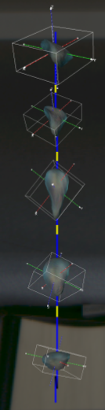 |
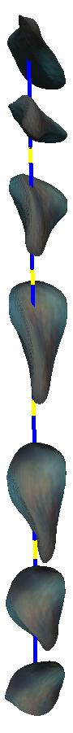 |
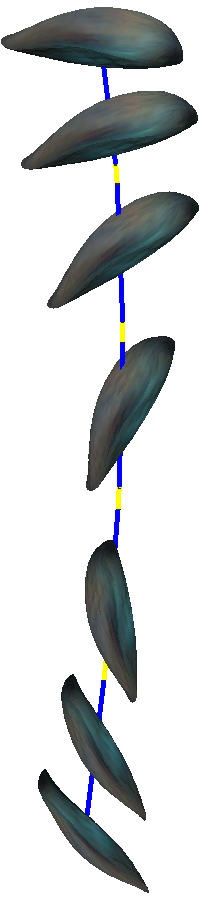 |
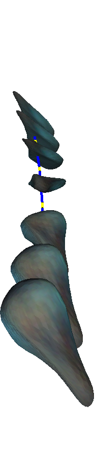 |
||||
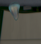 |
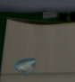 | ||||||
| Input输入 | Shape & Motion形状与运动 | Novel views新视角 | TSR ()TSR ( ) | ||||
Figure 1 : Reconstructing 3D shape and motion of a motion-blurred falling key.
图 1：重建下落钥匙在运动模糊下的三维形状和运动。
We jointly optimize over multiple input frames to estimate a single 3D textured mesh and corresponding motion model ( blue : observed trajectory, yellow : the exposure gap).
我们对多个输入帧进行联合优化，以估计单个 3D 纹理网格和相应的运动模型（蓝色：观察到的轨迹，黄色：曝光间隙）。
Temporal super-resolution (TSR) is one of the applications of the proposed Motion-from-Blur method.
时间超分辨率（TSR）是本文 Motion-from-Blur 方法的一项应用。
In this paper, we go beyond previous methods by estimating the 3D object’s shape and its motion from a series of motion-blurred video frames.
在本文中，我们通过从一系列运动模糊视频帧中估计 3D 物体的形状及其运动，超越了以前的方法。
To achieve this, we optimize all parameters jointly over multiple input frames ( i.e . the object’s 3D shape and texture, as well as its 3D motion).
为了实现这一目标，我们在多个输入帧上联合优化所有参数（即物体的 3D 形状和纹理，以及其 3D 运动）。
We tie up the object’s 3D shape and texture to be constant over all frames.
我们将物体的 3D 形状和纹理绑定在所有帧上保持不变。
Due to the longer time intervals involved, we must model more complex object motions (3D translation and 3D rotation) than necessary for a single motion-blurred frame [ 31 ] , e.g . the acceleration of a falling object (Fig. 1 ), or a ball bouncing against a wall (Fig. 3 ).
由于时间跨度更长，与单张运动模糊图像的处理方法 [31] 相比，我们必须建模更复杂的三维平移和旋转，例如下落物体的加速运动（图 1）或球撞墙后的反弹（图 3）。
Using multiple frames also comes with an additional challenge: the camera shutter opens and closes in set time intervals, leading to a gap in the object’s visible trajectory and appearance.
使用多个帧还带来了额外的挑战：相机快门在设定的时间间隔内打开和关闭，导致物体的可见轨迹和外观出现间隙。
To properly succeed in our task, we must also recover this exposure gap.
为完成这一任务，我们还必须恢复曝光间隙。
For a single frame only (as in [ 31 ] ), the motion direction (forward vs. backward motion along the estimated axis) is ambiguous.
仅对于单个帧（如[31]中），运动方向（沿着估计轴的向前运动与向后运动）是不明确的。
For instance, in Fig. 1 , the key could be translating from top to bottom or vice-versa, both resulting in the same input image.
例如，图 1 中的钥匙既可能从上向下运动，也可能反向运动；两种情况都可能产生相同的输入图像。
Since we consider multiple frames jointly, the motion direction is no longer ambiguous and can always be recovered.
由于我们联合考虑多个帧，因此运动方向不再模糊并且始终可以恢复。
Moreover, for rotating objects, we can reconstruct a more complete 3D model as we can integrate more observations covering its total surface.
此外，对于旋转物体，我们可以重建更完整的 3D 模型，因为我们可以整合覆盖其整个表面的更多观察结果。
In contrast, previous single-frame work [ 31 ] produces strong artifacts on unseen parts.
相比之下，以前的单帧工作[31]在看不见的部分上产生了强烈的伪影。
An example of our method’s output and an application to temporal super-resolution is shown in Fig. 1 .
我们的方法的输出和时间超分辨率应用的示例如图 1 所示。
To summarize, we make the following contributions:
总而言之，我们做出以下贡献：
- (1)
We propose a method called Motion-from-Blur (MfB) that jointly estimates the 3D motion, 3D shape, and texture of motion-blurred objects in videos by optimizing over multiple blurred frames.
我们提出了一种名为 Motion-from-Blur (MfB) 的方法，通过优化多个模糊帧来联合估计视频中运动模糊物体的 3D 运动、3D 形状和纹理。
Motion-from-Blur is the first method to optimize over a video sequence instead of a single frame.
Motion-from-Blur 是第一种针对视频序列而非单个帧进行优化的方法。
The source code is available at github.com/rozumden/MotionFromBlur .
源代码可在 github.com/rozumden/MotionFromBlur 获取。
- (2)
Our multi-frame optimization enables the estimation of the motion direction as well as more complex object motions such as acceleration and abrupt direction changes, e.g . bounces, for both 3D translation and 3D rotation.
多帧优化使我们能够估计运动方向，以及更复杂的三维平移和旋转，包括加速运动和反弹等引起的方向突变。
Moreover, compared to single-frame approaches, our estimates are also more consistent over time, with always correct motion direction, and more complete 3D shape reconstruction.
此外，与单帧方法相比，我们的估计随着时间的推移也更加一致，运动方向始终正确，并且 3D 形状重建更完整。
- (3)
As a requirement to model multiple frames, we estimate the exposure gap as part of the proposed optimization.
作为对多帧建模的要求，我们估计曝光间隙作为建议优化的一部分。
2 Related work2 相关工作
Many methods have been proposed for generic deblurring, e.g .
已经提出了许多通用去模糊方法，例如
[ 3 , 19 , 22 , 44 , 38 , 11 , 17 , 18 ] .
[3、19、22、44、38、11、17、18]。
A related task of frame interpolation or temporal super-resolution is studied in [ 6 , 21 , 34 , 9 , 22 , 4 , 35 , 10 ] .
帧插值或时间超分辨率的相关任务在[6,21,34,9,22,4,35,10]中进行了研究。
However, none of the generic deblurring methods work on extremely motion-blurred objects as shown in [ 27 ] , and specific methods are required.
然而，没有一种通用的去模糊方法适用于极度运动模糊的物体，如[27]所示，并且需要特定的方法。
We focus on deblurring and 3D reconstruction of highly motion-blurred objects.
我们专注于严重运动模糊物体的去模糊和 3D 重建。
These are called fast moving objects as defined in [ 27 ] – objects that move over distances larger than their size within the exposure time of one image.
这些被称为高速运动物体，如[27]中所定义——在一张图像的曝光时间内移动距离大于其尺寸的物体。
Detection and tracking of such objects are usually done by classical image processing methods [ 27 , 14 , 26 ] or more recently by deep learning [ 29 , 45 ] .
此类物体的检测和跟踪通常通过经典图像处理方法 [27, 14, 26] 或最近通过深度学习 [29, 45] 来完成。
A model-based approach to high-speed tracking with a specialized time-of-flight camera is studied in [ 37 ] .
[37] 研究了一种使用专门的飞行时间相机进行高速跟踪的基于模型的方法。
Single-frame deblurring of fast moving objects.
高速运动物体的单帧去模糊。
The first methods for fast moving object deblurring [ 27 , 15 ] assumed an object with a constant 2D appearance and 2D shape mask .
第一种高速运动物体去模糊方法 [27, 15] 假设物体具有恒定的 2D 外观和 2D 形状掩膜。
Hence, the object was represented by a single 2D image patch that could only be rigidly translated and rotated in 2D.
因此，物体由单个二维图像块表示，只允许在二维平面内作刚性平移和旋转。
They defined the image formation model for such objects as the blending of the blurred object appearance and the background :
这些方法将成像模型定义为模糊的物体外观 与背景 的混合：
| (1) |
where the motion blur is modeled by the convolution of the sharp object appearance and its trajectory, defined by the blur kernel .
其中，将清晰物体外观 与表示运动轨迹的模糊核 作卷积，以模拟运动模糊。
Several follow-up methods [ 14 , 26 , 25 , 40 , 28 , 13 , 29 ] were proposed to solve for given the input image and background .
在给定输入图像和背景的情况下，提出了几种后续方法[14,26,25,40,28,13,29]来求解。
They approximate the solution in a least-squares sense by energy minimization with suitable regularizers summarized by function :
这些方法通过最小化能量，在最小二乘意义下近似求解；适当的正则项由函数 统一表示：
| (2) |
As common in blind deblurring problems [ 15 ] , they deploy alternating minimization w.r.t. object and trajectory separately in a loop.
与盲去模糊问题 [15] 中的常见做法一样，它们交替优化物体参数 和轨迹 ，循环迭代。
Optimization is made possible thanks to many regularizers such as appearance total variation, blur kernel sparsity [ 15 , 14 , 26 ] , motion blur prior for curves [ 40 ] , appearance and mask rotational symmetry [ 28 ] , among others.
多种正则项使这一优化成为可能，包括外观全变分、模糊核稀疏性 [15,14,26]、曲线运动模糊先验 [40]，以及外观和掩膜的旋转对称性 [28] 等。
All of these methods share the same drawback that stems from the underlying image formation model ( 1 ), which assumes a constant 2D object appearance.
所有这些方法都具有相同的缺点，该缺点源于底层成像模型 (1)，该模型假设恒定的 2D 物体外观。
TbD-3D [ 28 ] extended the image formation model to support fast moving objects with a piece-wise constant 2D appearance as
TbD-3D [28] 扩展了成像模型，以支持具有分段恒定 2D 外观的高速运动物体，如下所示
| (3) |
where the trajectory is split into several pieces , assuming that along each piece the object appearance and mask are constant.
其中轨迹被分成几个部分，假设沿着每个部分，物体外观和掩膜是恒定的。
All unknowns are again estimated by energy minimization with additional problem-specific priors, e.g . object appearance in neighboring pieces is similar.
所有未知数再次通过能量最小化和附加的特定问题先验来估计，例如相邻块中的物体外观相似。
Later, DeFMO [ 30 ] was the first learning-based method for fast moving object deblurring, and it generalized the image formation model further to objects with a 2D appearance that can change arbitrarily along the trajectory:
后来，DeFMO[30]是第一个基于学习的高速运动物体去模糊方法，它将成像模型进一步推广到具有可以沿轨迹任意变化的2D外观的物体：
| (4) |
where object appearance and mask are modeled by an encoder-decoder network.
其中物体外观和掩膜由编码器-解码器网络建模。
The network places at the right image location, directly encoding the object trajectory.
网络将放置在正确的图像位置，直接编码物体轨迹。
Although trained on synthetic ShapeNet data [ 1 ] , DeFMO was shown to generalize to real-world images.
尽管 DeFMO 是在合成 ShapeNet 数据 [1] 上进行训练，但它被证明可以推广到现实世界的图像。
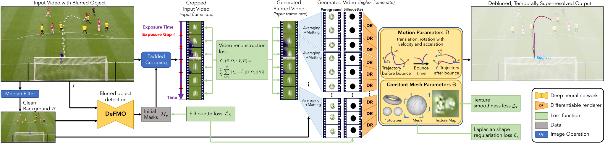
Figure 2 : Overview of Motion-from-Blur (MfB).
图 2：Motion-from-Blur（MfB）方法概览。
For a video of a motion-blurred object, we estimate its 3D motion, 3D shape, and texture.
对于运动模糊物体的视频，我们估计其 3D 运动、3D 形状和纹理。
From right to left , the pipeline can be interpreted as a generative model: Starting from all parameters for an object and its motion, we render high-frame-rate videos with the object appearance (foreground) and its silhouette.
从右到左，流程可以解释为生成模型：从物体及其运动的所有参数开始，我们渲染具有物体外观（前景）及其轮廓的高帧率视频。
Together with the known background, we generate a motion-blurred video of the object that should match the input video as good as possible.
与已知背景一起，我们生成物体的运动模糊视频，该视频应尽可能与输入视频匹配。
At test time, we optimize all object parameters (and the exposure gap) of this inverse problem by backpropagating the image differences through the differentiable renderer ( left to right ).
在测试时，我们通过可微渲染器（从左到右）反向传播图像差异来优化该逆问题的所有物体参数（和曝光间隙）。
We initialize the optimization using the DeFMO method [ 30 ] , which provides rough silhouettes of the blurred object.
我们使用 DeFMO 方法 [30] 初始化优化，该方法提供模糊物体的粗略轮廓。
MfB models a piece-wise smooth motion path to allow for a motion discontinuity like a bounce.
MfB 对分段平滑运动路径进行建模，以允许像弹跳这样的运动不连续性。
Video source: YouTube .
视频来源：YouTube。
Single-frame 3D reconstruction of fast moving objects.
高速运动物体的单帧 3D 重建。
The only prior work capable of 3D reconstruction of fast moving objects is Shape-from-Blur [ 31 ] .
唯一能够对高速运动物体进行 3D 重建的先前工作是 Shape-from-Blur [31]。
Instead of merely recovering the 2D object projections , they reconstruct the object’s 3D shape mesh as well as 3D motion.
他们不是仅仅恢复 2D 物体投影，而是重建物体的 3D 形状网格以及 3D 运动。
The latter is represented as the 3D translation and 3D rotation , defining the object’s pose at the beginning of the exposure time ( ), and the offsets and , moving the object to its pose at the end of the exposure time ( ).
后者表示为 3D 平移和 3D 旋转，定义物体在曝光时间开始时的位姿（），以及偏移和，将物体移动到其在曝光时间结束时的位姿（）。
With these definitions, the image formation model becomes
有了这些定义，成像模型就变成了
| (5) |
where the function transforms the mesh by the given 3D translation and 3D rotation.
其中函数通过给定的 3D 平移和 3D 旋转来变换网格。
Energy minimization is constructed from ( 5 ) to find the mesh and motion parameters that would re-render the input image as closely as possible.
能量最小化是根据（5）构建的，以找到将尽可能接近地重新渲染输入图像的网格和运动参数。
To make minimization feasible, mesh rendering is made differentiable using Differentialbe Interpolation-Based Rendering [ 2 ] , denoted by and for the appearance and 2D object silhouette, respectively.
为使该优化可行，我们采用基于可微插值的渲染方法 [2]，使网格渲染可微； 和 分别表示外观渲染与二维物体轮廓渲染。
To differentiate from 2D masks , silhouettes denote real renderings of a 3D object mesh.
为区别于二维掩膜 ，本文的轮廓专指由三维物体网格实际渲染得到的轮廓。
In contrast to Shape-from-Blur, our method models more complex trajectories, estimates the exposure gap, and takes into account several frames jointly, thereby allowing temporally consistent predictions and more completely reconstructed 3D shape models.
与 Shape-from-Blur 相比，我们的方法对更复杂的轨迹进行建模，估计曝光间隙，并联合考虑多个帧，从而允许时间一致的预测和更完整的重建 3D 形状模型。
3D shape from sharp images.
清晰图像的 3D 形状。
Many methods for 3D reconstruction have been proposed, both for single-frame [ 43 , 41 , 39 , 24 , 5 ] and multi-frame setting [ 20 , 36 , 32 , 33 ] .
人们已经提出了许多 3D 重建方法，包括单帧 [43,41,39,24,5] 和多帧设置 [20,36,32,33]。
But these methods assume sharp objects in the scene (the methods listed in previous paragraphs are the only ones dedicated to fast moving objects).
但这些方法假设场景中的物体成像清晰；前述段落中的方法才是专门针对高速运动物体的。
In other words, they either assume that an object moves slowly compared to the camera frame rate (or, equivalently, that the camera moves slowly).
换言之，它们假设物体相对于相机采样速度运动缓慢；或者等价地，假设相机运动缓慢。
3 Method3 方法
When images are captured by a conventional camera, the camera opens its shutter to allow the right amount of light to reach the camera sensor.
当传统相机拍摄图像时，相机会打开快门，让适量的光线到达相机传感器。
Then, the shutter closes, and the whole process is repeated until the required number of frames is captured.
然后，快门关闭，重复整个过程，直到捕获所需数量的帧。
This physical reality of the camera capturing process leads to two phenomena, which we model and exploit in our optimization.
相机捕捉过程的这种物理现实会导致两种现象，我们在优化中对其进行建模和利用。
The first one is the motion blur that appears when the object moves while the shutter is open.
第一个是快门打开时物体移动时出现的运动模糊。
The second one is the exposure gap that makes the camera ‘blind‘ when the shutter is closed, thus not observing the moving object for some parts of its motion.
第二个是曝光间隙，当快门关闭时，曝光间隙会使相机“失明”，从而无法观察到移动物体运动的某些部分。
We assume the input is a video stream of RGB images depicting a fast moving object.
我们假设输入视频流 由 张包含高速运动物体的 RGB 图像组成。
The desired output of our method is a single textured 3D object mesh , its motion parameters consisting of a continuous 3D translation and 3D rotation at every point in time during the video duration, and the exposure gap (a real-valued parameter).
我们方法的期望输出是单个纹理 3D 物体网格，其运动参数由视频持续时间期间每个时间点的连续 3D 平移和 3D 旋转组成，以及曝光间隙（实值参数）。
Sec. 3.1 introduces these parameters and a video formation model to generate video frames for given parameters.
第 3.1 节介绍这些参数，以及根据给定参数生成视频帧的成像模型。
In case we know the real values of all parameters, we could render the input video .
如果我们知道所有参数的真实值，我们可以渲染输入视频。
Then, in Sec. 3.2 , we show how to optimize these parameters to re-render the input video frames as closely as possible.
随后，第 3.2 节介绍如何优化这些参数，使重新渲染的视频帧尽可能接近输入。
3.1 Modeling3.1 建模
Mesh modeling.
网格建模。
The mesh parameters consist of an index to a prototype mesh, vertex offsets from its initial vertex positions to deform the mesh, and the texture map.
网格参数由原型网格的索引、使网格变形的初始顶点位置的顶点偏移以及纹理贴图组成。
We use a set of prototype meshes to account for varying mesh complexity and different genus numbers.
我们采用一组原型网格，以适应不同的网格复杂度和拓扑亏格数。
Our set of prototype meshes contains a torus and two spheres with a different number of vertices.
我们的一组原型网格包含一个圆环和两个具有不同顶点数的球体。
The texture mapping from vertices to the 2D location on the texture map is assumed to be fixed.
假设从顶点到纹理贴图上的 2D 位置的纹理映射是固定的。
Similarly, the mesh triangular faces consist of fixed sets of edges that connect vertices.
类似地，网格三角形面由连接顶点的固定边集组成。
Motion modeling.
运动建模。
The object motion is composed of continuous 3D translations and 3D rotations represented by quaternions .
物体运动由连续的3D平移和由四元数表示的3D旋转组成。
Both translations and rotations are viewed from the camera perspective, which is assumed to be static.
平移和旋转都是从相机角度观察的，假设相机是静态的。
We assume that they are defined at all points in time , spanning the duration of the entire input video.
我们假设它们是在所有时间点定义的，跨越整个输入视频的持续时间。
We implement the functions and as piece-wise polynomials, and their parameters are the polynomial coefficients.
我们将函数和实现为分段多项式，它们的参数是多项式系数。
More precisely, we use piece-wise quadratic functions with two connected pieces, which are able to model one bounce, as well as accelerating motions ( e.g . a falling object).
更准确地说，我们使用具有两个连接部分的分段二次函数，它能够模拟一次弹跳以及加速运动（例如下落的物体）。
Exposure modeling.
曝光建模。
We denote the exposure gap as a real-valued parameter that represents the fraction of the duration of a frame during which the camera shutter is closed.
曝光间隙用实值参数 表示，其含义是快门关闭时间占一帧周期的比例。
In other words, it is the duration of the closed shutter divided by the duration of one shutter cycle.
换句话说，它是关闭快门的持续时间除以一个快门周期的持续时间。
A hypothetical full exposure camera that never closes its shutter would result in .
假设一台永不关闭快门的全曝光相机将导致。
In most cases, conventional cameras would set their exposure gap close to 0 for dark environments to get as much light as possible and close to 1 for very bright environments to avoid overexposure.
在大多数情况下，传统相机会在黑暗环境中将曝光间隙设置为接近 0，以获得尽可能多的光线，在非常明亮的环境中将曝光间隙设置为接近 1，以避免曝光过度。
Typically, smaller exposure gaps lead to more motion blur.
通常，较小的曝光间隙会导致更多的运动模糊。
Video formation model.
视频成像模型。
The video formation model is the core of our method.
视频成像模型是我们方法的核心。
It renders a video frame for a given set of all above-mentioned parameters:
它针对给定的所有上述参数集渲染视频帧：
| (6) |
where the interval bounds for frame go from the beginning of its exposure time when the shutter opens at time to the end of its exposure time when the shutter closes at time .
其中，帧的间隔范围是从快门在时间打开时的曝光时间开始到快门在时间关闭时的曝光时间结束。
Consequently, the object is not observed between and .
因此，在和之间观察不到物体。
As defined previously, the function first rotates the mesh by the 3D rotation and then moves it by the 3D translation .
如之前所定义，函数首先通过 3D 旋转来旋转网格，然后通过 3D 平移来移动网格。
Mesh rendering is implemented by Differentiable Interpolation-Based Rendering [ 2 ] , denoted by for the appearance and by for the silhouette.
网格渲染通过可微插值渲染[2]实现，外观用表示，轮廓用表示。
Like all previous methods for fast moving object deblurring, we compute the background as the median of all frames in the input video .
与之前所有高速运动物体去模糊的方法一样，我们将背景计算为输入视频中所有帧的中值。
Note that our modeling is a strict generalization of SfB [ 31 ] for the case of and linear motion.
我们的模型严格推广了 SfB [31]：在 且运动为线性的条件下，可退化为 SfB。
3.2 Model fitting3.2 模型拟合
This section presents an optimization method to fit the introduced model to the given input video.
本节介绍一种优化方法，使引入的模型适合给定的输入视频。
Loss function.
损失函数。
The main driving force of the proposed approach is the video reconstruction loss
该方法的主要驱动力是视频重建损失
| (7) |
This loss is low if the frames rendered by our model via Eq. ( 6 ) closely look like the input frames .
如果模型通过式（6）渲染得到的帧 与输入帧 十分接近，该损失就较小。
In order to make the optimization easier and well-behaved, we apply auxiliary loss terms and regularizers, similar to [ 31 ] .
为了使优化更容易且表现良好，我们应用辅助损失项和正则项，类似于[31]。
We briefly summarize them here and refer to [ 31 ] for details.
我们在这里简要总结它们并参考[31]了解详细信息。
The silhouette consistency loss helps localize the object in the image faster and serves as initialization for estimating the 3D mesh and its translation.
轮廓一致性损失有助于更快地定位图像中的物体，并用作估计 3D 网格及其平移的初始化。
First, we run DeFMO [ 30 ] and use their estimated masks for approximate object location.
首先，我们运行 DeFMO [30] 并使用它们估计的掩膜来获得近似的物体位置。
To synchronize the motion direction (forward vs. backward) for DeFMO masks across frames, we minimize the distance between consecutive masks in adjacent frames.
为了同步跨帧的 DeFMO 掩膜的运动方向（向前与向后），我们最小化相邻帧中连续掩膜之间的距离。
Then, is defined as an intersection over union (IoU) between the DeFMO masks and 2D mesh silhouettes, rendered by our method:
随后，利用 DeFMO 掩膜与本文方法渲染的二维网格轮廓之间的交并比（IoU），定义 ：
| (8) |
Furthermore, we add the commonly employed [ 41 , 2 , 31 , 26 , 13 ] total variation and Laplacian regularizers.
此外，我们添加了常用的[41,2,31,26,13]全变分和拉普拉斯正则项。
Total variation on texture maps encourages the model to produce smooth textures, and the Laplacian regularizer promotes smooth meshes.
纹理贴图上的全变分鼓励模型产生平滑的纹理，拉普拉斯正则项促进平滑的网格。
Finally, the joint loss is a weighted sum of all four loss terms:
最后，联合损失是所有四个损失项的加权和：
| (9) |
| Inputs 输入 Iy | Bounce!弹跳！ | |||||||||||||
| DeFMO [30] DeFMO [ 30 ] Iy | 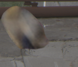 |
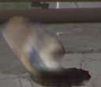 |
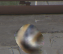 |
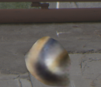 |
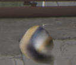 |
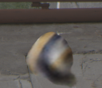 |
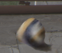 |
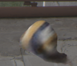 |
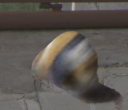 |
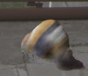 |
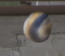 |
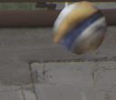 | ||
| SfB [31] SfB [ 31 ] Iy | 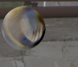 |
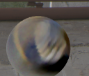 |
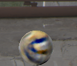 |
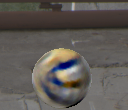 |
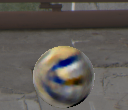 |
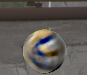 |
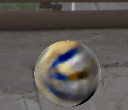 |
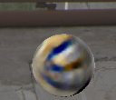 |
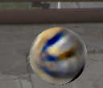 |
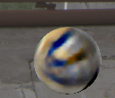 |
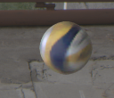 |
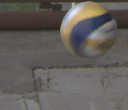 | ||
| MfB (ours) MfB (本文方法) Iy | 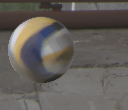 |
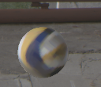 |
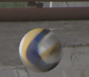 |
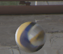 |
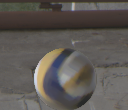 |
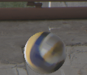 |
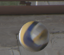 |
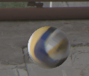 |
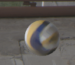 |
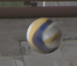 |
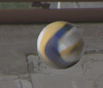 |
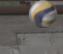 | ||
| GT GT Iy | ||||||||||||||
| ⏟ | ⏟ | ⏟ | ||||||||||||
Figure 3: Estimating 3D shape and motion of a motion-blurred volleyball, shown as temporal super-resolution.
图 3：估计运动模糊排球的 3D 形状和运动，以时间超分辨率显示。
The proposed Motion-from-Blur (MfB) method is the first to use multiple video frames during optimization and the first to model complex trajectories with bounces, accounting for the exposure gap.
所提出的Motion-from-Blur (MfB) 方法是第一个在优化过程中使用多个视频帧的方法，也是第一个通过反弹对复杂轨迹进行建模的方法，同时考虑了曝光间隙。
The previous methods for FMO deblurring (DeFMO) and single-frame 3D reconstruction (SfB) have difficulties reconstructing the bounce as they get confused by the ball’s shadow due to the lack of multi-frame optimization.
之前的 FMO 去模糊 (DeFMO) 和单帧 3D 重建 (SfB) 方法很难重建反弹，因为由于缺乏多帧优化，它们会被球的阴影混淆。
Optimization.
优化。
Fig. 2 shows an overview of the pipeline.
图 2 显示了流程的概述。
We backpropagate the joint loss up to the mesh , motion parameters , and exposure gap .
我们将联合损失的梯度反向传播至网格 、运动参数 和曝光间隙 。
Optimization is done with ADAM [ 12 ] using a learning rate of .
使用 ADAM [12] 使用学习率完成优化。
In the beginning, we run pre-optimization for at most 100 iterations with , thus omitting the video reconstruction loss and texture map updates.
一开始，我们使用 运行最多 100 次迭代的预优化，从而省略了视频重建损失和纹理贴图更新。
Pre-optimization stops when the silhouette loss becomes , meaning that the mesh silhouettes have average IoU with the DeFMO masks.
当轮廓损失变为时，预优化停止，这意味着网格轮廓与DeFMO掩膜具有平均IoU。
This pre-optimization phase is required since the 3D translation has to put the mesh at approximately the right location in the image to get a training signal for the video reconstruction loss to estimate the texture map, 3D object rotation, and 3D shape.
这一预优化阶段不可缺少：只有先通过三维平移将网格放到图像中大致正确的位置，视频重建损失 才能提供有效的优化信号，用于估计纹理贴图、三维旋转和形状。
The more video frames are used, the more important this step becomes because the object’s 2D location varies more across the frames.
使用的视频帧越多，此步骤就变得越重要，因为物体的 2D 位置在帧之间变化更大。
Experimentally, for the optimization never converges without pre-optimization.
实验上，对于，如果没有预优化，优化永远不会收敛。
We optimize over the mesh prototypes by running the optimization for each prototype and choosing the best one based on the lowest value of the video reconstruction loss ( 7 ).
我们通过对每个原型运行优化并根据视频重建损失的最低值选择最好的一个来优化网格原型（7）。
During optimization, the mesh is always kept in canonical space by normalizing the vertices to zero mean and unit variance.
在优化过程中，通过将顶点标准化为零均值和单位方差，网格始终保持在规范化空间中。
The main optimization is run for 1000 iterations using the full loss ( 9 ) with .
主要优化使用的完全损失（9）运行1000次迭代。
The hyperparameter of the Laplacian regularizer is set to 1000 experimentally.
拉普拉斯正则项的超参数实验设置为1000。
Both the texture total variation and silhouette consistency losses have no weights since the default value of worked well in our experiments.
纹理全变分和轮廓一致性损失都没有权重，因为的默认值在我们的实验中效果很好。
Initialization.
初始化。
The mesh parameters are initialized to the prototype shape with zero vertex offsets and a white texture map.
网格参数被初始化为具有零顶点偏移和白色纹理贴图的原型形状。
The motion parameters are initialized such that the object is placed in the middle of the image with zero rotation.
运动参数被初始化，使得物体以零旋转放置在图像的中间。
Finally, the exposure gap is initialized to .
最后，曝光间隙被初始化为。
Implementation.
实现细节。
We use PyTorch [ 23 ] with Kaolin [ 8 ] for differentiable rendering.
我们使用 PyTorch [23] 和 Kaolin [8] 进行可微渲染。
All integrals in each frame are discretized by splitting time intervals into 8 evenly-spaced pieces.
通过将时间间隔分成 8 个均匀间隔的部分，对每帧中的所有积分进行离散化。
All experiments are run on an Nvidia GTX 1080Ti GPU with seconds average runtime per frame.
所有实验均在 Nvidia GTX 1080Ti GPU 上运行，每帧平均运行时间为秒。
4 Experiments4 实验
We evaluate our method’s accuracy by measuring the deblurring quality on 3 real-world datasets from the fast moving object deblurring benchmark [ 30 ] .
我们通过测量高速运动物体去模糊基准 [30] 中 3 个真实世界数据集的去模糊质量来评估我们方法的准确性。
Since there are no real image datasets of fast moving objects with associated ground-truth 3D shapes and motion, we follow the protocol of [ 31 ] and evaluate the quality of reconstructed 3D meshes, 3D translations, and 3D rotations on a synthetic dataset.
由于没有具有相关真值 3D 形状和运动的高速运动物体的真实图像数据集，因此我们遵循 [31] 的协议并评估合成数据集上重建的 3D 网格、3D 平移和 3D 旋转的质量。
| Method 方法 | Falling Objects [13] Falling Objects 数据集 [13] | TbD-3D Dataset [28] TbD-3D Dataset [ 28 ] | TbD Dataset [14] TbD Dataset [ 14 ] | ||||||
|---|---|---|---|---|---|---|---|---|---|
| TIoUTIoU | PSNR峰值信噪比 | SSIM SSIM | TIoUTIoU | PSNR峰值信噪比 | SSIM SSIM | TIoUTIoU | PSNRPSNR | SSIM SSIM | |
| Jin et al. [10] Jin 等人 [10] | N / A | 23.54 | 0.575 | N / A | 24.52 | 0.590 | N / A | 24.90 | 0.530 |
| DeblurGAN-v2 [18] DeblurGAN-v2 [ 18 ] | N / A | 23.36 | 0.588 | N / A | 23.58 | 0.603 | N / A | 24.27 | 0.537 |
| TbD [14] TbD [ 14 ] | 0.539 | 20.53 | 0.591 | 0.598 | 18.84 | 0.504 | 0.542 | 23.22 | 0.605 |
| TbD-3D [28] TbD-3D [ 28 ] | 0.539 | 23.42 | 0.671 | 0.598 | 23.13 | 0.651 | 0.542 | 25.21 | 0.674 |
| DeFMO [30] DeFMO [ 30 ] | 0.684 | 26.83 | 0.753 | 0.879 | 26.23 | 0.699 | 0.550 | 25.57 | 0.602 |
| SfB [31] SfB [ 31 ] | 0.701 | 27.18 | 0.760 | 0.921 | 26.54 | 0.722 | 0.610 | 25.66 | 0.659 |
| MfB (ours) MfB (本文方法) | 0.772 | 27.54 | 0.765 | 0.927 | 26.57 | 0.728 | 0.614 | 26.63 | 0.678 |
Table 1: Fast moving object deblurring benchmark.
表 1：高速运动物体去模糊基准。
We compare the proposed MfB method to generic deblurring methods [ 18 , 10 ] (no trajectory output, thus TIoU is undefined) and to methods specifically designed for fast moving object deblurring [ 14 , 28 , 30 , 31 ] .
我们将所提出的 MfB 方法与通用去模糊方法 [18, 10]（没有轨迹输出，因此 TIoU 未定义）以及专门为高速运动物体去模糊设计的方法 [14, 28, 30, 31] 进行比较。
| TIoU TIoU | PSNR 峰值信噪比 | SSIM SSIM | ||
|---|---|---|---|---|
| full 完整数据集 | SfB [31] SfB [ 31 ] | 0.921 | 26.54 | 0.722 |
| MfB (ours) MfB (本文方法) | 0.927 | 26.57 | 0.728 | |
| bnc bnc | SfB [31] SfB [ 31 ] | 0.892 | 21.77 | 0.628 |
| MfB (ours) MfB (本文方法) | 0.902 | 25.01 | 0.643 | |
| bnc bnc | SfB [31] SfB [ 31 ] | 0.863 | 20.77 | 0.595 |
| MfB (ours) MfB (本文方法) | 0.889 | 24.57 | 0.620 |
Table 2: Deblurring quality at bounces.
表 2：反弹时的去模糊质量。
We compare scores on the full TbD-3D dataset [ 28 ] , on a subset of frames at bounces (bnc ), and additionally on frames that are immediately before and after the bounce (bnc ).
我们比较完整 TbD-3D 数据集 [28]、反弹帧子集 (bnc ) 以及紧接着反弹之前和之后的帧 (bnc ) 的分数。
The proposed multi-frame MfB is significantly more accurate at bounces (Fig. 3 ) than the single-frame SfB, especially on the deblurring metric PSNR.
所提出的多帧 MfB 在反弹时比单帧 SfB 明显更准确（图 3），特别是在去模糊度量 PSNR 上。
Fast moving object deblurring benchmark.
高速运动物体去模糊基准。
It consists of 3 datasets of varying difficulty.
它由 3 个不同难度的数据集组成。
The easiest one is TbD [ 14 ] that contains mostly spherical objects with uniform color (12 sequences, total 471 frames).
最简单的一个是 TbD [14]，它主要包含颜色均匀的球形物体（12 个序列，总共 471 帧）。
A more difficult dataset is TbD-3D [ 28 ] that contains mostly spherical objects with complex textures that move with significant 3D rotation (10 sequences, total 516 frames).
一个更困难的数据集是 TbD-3D [28]，它主要包含具有复杂纹理的球形物体，这些物体会随着显着的 3D 旋转而移动（10 个序列，总共 516 帧）。
The most difficult dataset is Falling Objects [ 13 ] with objects of various shapes and complex textures (6 sequences, total 94 frames).
最困难的数据集是 Falling Objects [13]，其中包含各种形状和复杂纹理的物体（6 个序列，总共 94 帧）。
The ground truth for these datasets was recorded by a high-speed camera capturing the moving object without motion blur.
这些数据集的真值是由高速摄像机记录的，该摄像机捕获移动物体而没有运动模糊。
Therefore, we have 8 high-speed frames for each frame input to our method.
因此，我们的方法输入的每个帧都有 8 个高速帧。
We measure the deblurring quality by reconstructing the high-speed camera footage as temporal super-resolution.
我们通过时间超分辨率重建高速相机拍摄的画面，以此衡量去模糊质量。
For that, we apply the video formation model ( 6 ) at a 8 times finer temporal resolution by using the estimated object parameters after optimization on the input slow-speed frames.
为此，我们通过使用对输入慢速帧进行优化后估计的物体参数，以 8 倍精细的时间分辨率应用视频成像模型 (6)。
Then, the reconstructed high-speed camera frames and the ground-truth ones are compared by the Peak Signal to Noise Ratio (PSNR) and Structural Similarity (SSIM) metrics.
然后，通过峰值信噪比（PSNR）和结构相似度（SSIM）指标对重建的高速相机帧和真值帧进行比较。
Additionally, these datasets contain ground-truth 2D object trajectories and 2D object masks.
此外，这些数据集包含真值 2D 物体轨迹和 2D 物体掩膜。
Therefore, we also measure the trajectory intersection over union (TIoU), defined as the IoU between the ground-truth mask placed at the ground-truth 2D location and the reconstructed 2D location (averaged over time).
此外，我们衡量轨迹交并比（TIoU）：将同一个真值掩膜分别放置在真值二维位置与重建二维位置，计算两者的 IoU，再对时间取平均。
We reconstruct the 2D object location for our method as the center of mass of the projected mesh silhouette at each high-speed frame.
我们为我们的方法重建 2D 物体位置作为每个高速帧的投影网格轮廓的质心。
We compare to various state-of-the-art methods: a generic deblurring method DeblurGAN-v2 [ 18 ] , a generic method for temporal super-resolution [ 10 ] , and methods designed for fast moving object deblurring [ 14 , 28 , 30 , 31 ] .
我们与各种最先进的方法进行比较：通用去模糊方法 DeblurGAN-v2 [18]、时间超分辨率的通用方法 [10] 以及为高速运动物体去模糊而设计的方法 [14,28,30,31]。
All compared methods use each video frame independently, whereas MfB is the first method to exploit multiple frames simultaneously.
所有比较的方法都独立地使用每个视频帧，而 MfB 是第一个同时利用多个帧的方法。
We run MfB in a temporal sliding window approach with if not mentioned otherwise.
如果没有另外提及，我们使用以时间滑动窗口方法运行 MfB。
For each frame, we always choose the window for which the video reconstruction loss ( 7 ) is the lowest, measured only on this frame (similar to the best prototype selection).
对于每一帧，我们总是选择视频重建损失（7）最低的窗口，仅在该帧上测量（类似于最佳原型选择）。
This temporal sliding window approach reduces memory requirements and increases robustness to slightly moving camera and non-static background.
这种时间滑动窗口方法减少了内存需求，并提高了对稍微移动的相机和非静态背景的鲁棒性。
Table 1 presents the results.
表 1 列出了结果。
MfB outperforms all other methods on all three datasets and for all three metrics.
MfB 在所有三个数据集和所有三个指标上均优于所有其他方法。
Qualitatively, the estimated temporal super-resolution is more consistent compared to single-frame approaches since MfB explains all frames by a single 3D object mesh and texture (Fig. 5 , ).
定性地讲，与单帧方法相比，估计的时间超分辨率更加一致，因为 MfB 通过单个 3D 物体网格和纹理解释所有帧（图 5，）。
Novel view synthesis is also considerably better as the object outline is accurate from all viewpoints, and even sharp angles of the box (Fig. 5 , novel views) are clear.
新视角合成的效果也显著更好：各视角下的物体轮廓均较准确，甚至盒子尖锐的 角也能清晰重建（图 5 的新视角结果）。
Interestingly, the previous state-of-the-art single-frame 3D reconstruction approach [ 31 ] produces several artifacts, inconsistencies, and produces an entirely incorrect 3D shape for object parts that are not visible in a single input frame.
有趣的是，之前最先进的单帧 3D 重建方法 [31] 会产生一些伪影、不一致，并且会为在单个输入帧中不可见的物体部分产生完全不正确的 3D 形状。
Moreover, DeFMO [ 30 ] and SfB [ 31 ] fail in the presence of shadows and specularities, whereas MfB better reconstructs the object due to additional constraints from neighboring frames (Fig. 5 , and ).
此外，DeFMO [30]和SfB [31]在存在阴影和镜面反射的情况下会失败，而MfB由于来自相邻帧的额外约束而可以更好地重建物体（图5，和）。
Exposure gap consistency.
曝光间隙一致性。
We evaluate the variance of the exposure gap estimation over the sequence duration, averaged over all sequences.
我们评估序列持续时间内曝光间隙估计的方差，对所有序列进行平均。
The value is very low ( ), indicating good consistency.
该值非常低（），表明一致性良好。
Besides, the estimated exposure gap varies widely depending on the camera settings: on the Falling Objects dataset, and on the YouTube sequence in Fig. 4 (bottom).
此外，估计的曝光间隙根据相机设置的不同而有很大差异：在Falling Objects数据集上，在图4（底部）的YouTube序列上。
This highlights the need for modeling the exposure gap.
这凸显了对曝光间隙进行建模的必要性。
| SfB [31] SfB [ 31 ] | 37.8 % | 10.9∘ | 3.0 % | |
|---|---|---|---|---|
| MfB (ours) MfB (本文方法) | 20.0 % | 6.4∘ | 2.7 % | |
| SfB [31] SfB [ 31 ] | 12.8 % | 4.8∘ | 2.3 % | |
| MfB (ours) MfB (本文方法) | 8.8 % | 3.7∘ | 2.2 % |
Table 3: Evaluating 3D translation, 3D rotation, and 3D shape on a synthetic dataset.
表 3：在合成数据集上评估 3D 平移、3D 旋转和 3D 形状。
First block: dataset with at most 90 ∘ rotation over 3 frames, second block: at most 30 ∘ rotation.
第一个块：3 帧内最多 90 ∘ 旋转的数据集，第二块：最多 30 ∘ 旋转。
The error rate of MfB is half of the single-frame SfB on the large rotation dataset when measuring 3D translation and 3D rotation errors.
在大旋转幅度数据集上，MfB 的三维平移误差 和三维旋转误差 约为单帧 SfB 的一半。
MfB is still significantly better on the small rotation dataset.
MfB 在小旋转数据集上仍然明显更好。
Evaluating at bounces.
评估反弹。
A unique new feature of our approach is its ability to model bounces, which results in better deblurring in those cases.
我们方法的一个独特的新功能是它能够对反弹进行建模，从而在这些情况下实现更好的去模糊效果。
Here, we evaluate this effect explicitly.
在这里，我们明确地评估了这种效果。
To this end, we manually annotate the frames in which a bounce happens in the TbD-3D dataset [ 28 ] (the only dataset with relatively frequent bounces).
为此，我们人工标注 TbD-3D 数据集 [28]（唯一具有相对频繁反弹的数据集）中发生反弹的帧。
Overall, we found 38 bounces from 516 frames in total from 10 sequences, which amounts to chance of a bounce.
在 10 个序列、共 516 帧中，我们标注出 38 次反弹，对应反弹帧比例 。
Since the frames immediately before and after a bounce are usually affected too ( e.g . due to a shadow as in Fig. 3 ), we also evaluate them, yielding a total of 114 frames ( ).
由于反弹前后的帧通常也会受到影响（例如，由于如图 3 中的阴影），因此我们也对其进行评估，总共产生 114 帧（）。
As shown in Table 2 , MfB significantly outperforms SfB at bounces, especially in terms of deblurring quality metric PSNR.
如表 2 所示，MfB 在反弹方面明显优于 SfB，特别是在去模糊质量指标 PSNR 方面。
The performance gap is still significant when evaluating on frames that are adjacent to the bounce but is relatively small when averaged over the whole dataset.
在对与反弹相邻的帧进行评估时，性能差距仍然很大，但在对整个数据集进行平均时，性能差距相对较小。
This indicates that bounces are significantly more difficult than other parts of the dataset, as shown qualitatively in Fig. 4 and Fig. 3 , and our method successfully reconstructs such frames as well.
这表明反弹比数据集的其他部分要困难得多，如图 4 和图 3 定性所示，并且我们的方法也成功地重建了此类帧。
For single-frame approaches, the difficulty comes mainly from the trajectory non-linearity, slight object deformation, and shadows near the bounce point.
对于单帧方法，困难主要来自轨迹非线性、轻微的物体变形以及弹跳点附近的阴影。
Motion-from-Blur is robust to these difficulties since the optimization is more constrained from easier frames before and after the bounce, and the trajectory is explicitly modeled with a bounce.
Motion-from-Blur 对这些困难具有鲁棒性，因为优化更多地受到弹跳前后较简单帧的限制，并且轨迹是用弹跳明确建模的。
On frames that are far from the bounce, the difference in deblurring quality between the single-frame and multi-frame approaches is marginal on the TbD-3D dataset.
在远离反弹的帧上，单帧和多帧方法之间的去模糊质量差异在 TbD-3D 数据集上是微乎其微的。
Note that our model is generic and estimates continuously connected trajectories also if there is no bounce.
请注意，我们的模型是通用的，并且在没有反弹的情况下也会估计连续连接的轨迹。
Synthetic 3D dataset.
合成 3D 数据集。
We construct a synthetic dataset of fast moving objects with ground-truth 3D models and 3D motions for evaluation.
我们使用真值 3D 模型和 3D 运动构建高速运动物体的合成数据集以进行评估。
We sample random 3D models from the ShapeNet dataset [ 1 ] , random linear 3D translations and 3D rotations (for a fair comparison with SfB [ 31 ] that reconstructs only linear motions), and random consecutive frames from the VOT [ 16 ] tracking dataset as backgrounds. 3D translation is randomly chosen in the interval between 1 to 5 object sizes, and 3D rotation is randomly chosen up to (first subset) or (second subset) during the video duration.
我们从 ShapeNet 数据集 [1] 中采样随机 3D 模型，随机线性 3D 平移和 3D 旋转（为了与仅重建线性运动的 SfB [31] 进行公平比较），并从 VOT [16] 跟踪数据集中随机连续帧作为背景。 3D 平移在 1 到 5 个物体大小之间随机选择，3D 旋转在视频持续期间随机选择（第一个子集）或（第二个子集）。
Then, we apply the video formation model ( 6 ) with to create two subsets, each consisting of 30 short videos.
然后，我们应用的视频成像模型（6）来创建两个子集，每个子集由30个短视频组成。
We report the mesh error as the average bidirectional distance between the closest vertices of the ground-truth and the estimated mesh, both placed at the ground-truth and predicted initial 6D pose, and divided by the object size.
网格误差 定义为真值网格与估计网格顶点之间的平均双向最近邻距离，并除以物体尺寸进行归一化；两张网格分别置于真值和预测的初始六自由度位姿。
For evaluating the translation error , we compute the norm of the difference vector between the predicted and ground-truth translation offset , divided by the object size.
为了评估平移误差，我们计算预测平移偏移量与真实值平移偏移之间的差异向量的范数，除以物体大小。
Thus, these two scores ( and ) are reported as a fraction of the object size.
因此，这两项指标（ 和 ）均以相对于物体尺寸的比例表示。
For evaluating the rotation error , we compute the average angle between the estimated rotation change (rotation between and ) and the ground-truth one.
为了评估旋转误差，我们计算估计的旋转变化（和之间的旋转）与真值之间的平均角度。
We compare to the only other method that can reconstruct a 3D object and its motion from the motion-blurred input (SfB [ 31 ] ).
我们与唯一可以从运动模糊输入重建 3D 物体及其运动的其他方法 (SfB [31]) 进行比较。
Our method is applied to all three video frames in each video, whereas SfB is applied to them individually, and the scores are averaged (w.r.t. one video frame).
我们的方法应用于每个视频中的所有三个视频帧，而 SfB 单独应用于它们，并对分数进行平均（相对于一个视频帧）。
As shown in Table 3 , on the synthetic dataset [1] with up to rotation, our method is almost twice as accurate as SfB in terms of 3D translation and 3D rotation estimation.
如表 3 所示，在具有高达 旋转的合成数据集 [1] 上，我们的方法在 3D 平移和 3D 旋转估计方面几乎是 SfB 的两倍。
For smaller rotations up to , the difference is smaller but is still significant.
对于旋转幅度不超过 的较小旋转，差距有所减小，但仍然显著。
This highlights that multi-frame optimization is especially beneficial for complex objects (as from ShapeNet) with non-negligible rotations.
这凸显了多帧优化对于具有不可忽略的旋转的复杂物体（例如来自 ShapeNet）特别有益。
Applications.
应用。
MfB can be used for imitating high-speed cameras or multiplying their capabilities by creating temporal super-resolution from motion-blurred videos.
MfB 可用于模仿高速摄像机或通过从运动模糊视频创建时间超分辨率来增强其功能。
MfB can perform 3D reconstruction of blurred objects that are almost unidentifiable by humans, e.g . image forensics of surveillance cameras.
MfB 可以对人类几乎无法识别的模糊物体进行 3D 重建，例如监控摄像机的图像取证。
Applications also include 6D object tracking and reconstruction in sports, e.g . football, tennis, basketball.
应用还包括足球、网球、篮球等体育运动中的六自由度物体跟踪和重建。
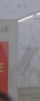 |
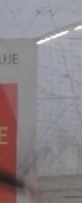 |
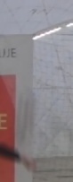 |
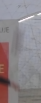 |
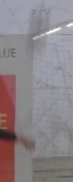 |
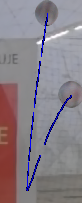 |
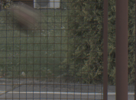 |
|||||
| Traj.轨迹。 |
Figure 4: Reconstructing 2D object trajectories with bounces.
图 4：通过反弹重建 2D 物体轨迹。
For each video, we reconstruct 3D object and its motion ( blue : observed trajectory, yellow : the exposure gap).
对于每个视频，我们重建 3D 物体及其运动（蓝色：观察到的轨迹，黄色：曝光间隙）。
We visualize the trajectory for the center of mass of the mesh silhouettes and further render the first and last pose of the object (right-most image).
我们可视化网格轮廓质心的轨迹，并进一步渲染物体的第一个和最后一个位姿（最右边的图像）。
Top row: Scene from TbD [ 14 ] dataset; Center row: TbD-3D [ 28 ] scene; Bottom row: YouTube scene from Fig. 2 .
顶行：来自 TbD [14] 数据集的场景；中排：TbD-3D [28] 场景；底行：图 2 中的 YouTube 场景。
| Inputs 输入 Iy | |||||||||||||||||
| DeFMO [30] DeFMO [ 30 ] Iy | No, cannot do.该方法不支持。 | ||||||||||||||||
| SfB [31] SfB [ 31 ] Iy | |||||||||||||||||
| MfB (ours) MfB (本文方法) Iy | |||||||||||||||||
| GT GT Iy | Not available.无可用结果。 | ||||||||||||||||
| ⏟ | ⏟ | ⏟ | ⏟ | ⏟ | ⏟ | ⏟ | |||||||||||
| Novel views新视角 | |||||||||||||||||
Figure 5: 3D reconstruction and temporal super-resolution of a falling box from Falling Objects dataset [ 13 ] .
图 5：来自 Falling Objects 数据集 [13] 的下落盒子的 3D 重建和时间超分辨率。
Our method produces more consistent results over input frames than previous methods and does not suffer from artifacts on frames with shadows ( and ).
与以前的方法相比，我们的方法在输入帧上产生了更一致的结果，并且在带有阴影的帧（和）上不会出现伪影。
The final 3D reconstruction is also more complete and accurate than the single-frame approach SfB [ 31 ] as shown on novel views.
最终的 3D 重建也比单帧方法 SfB [31] 更完整和准确，如新视图所示。
5 Limitations5 限制
Static camera.
静态相机。
MfB assumes that the video is captured by a nearly static camera.
MfB 假设视频是由几乎静态的摄像机捕获的。
A moving camera adds even more ambiguity to the observed blur that could stem from both camera and object motion blur.
相机运动会增加模糊成因的歧义，因为观察到的运动模糊可能同时来自相机和物体运动。
Moreover, motion blur also has to be compensated by the camera motion, and the whole problem would become much more difficult.
此外，还需考虑相机运动对运动模糊的影响，这会使整个问题更加困难。
Since all previous methods for fast moving object deblurring and 3D reconstruction [ 14 , 28 , 26 , 30 , 31 ] also assume a static camera, tackling this problem remains challenging future work.
由于之前所有用于高速运动物体去模糊和 3D 重建的方法 [14,28,26,30,31] 也假设静态相机，因此解决这个问题仍然是未来工作的挑战。
Shutter.
快门。
We assume that the shutter speed is constant.
我们假设快门速度是恒定的。
However, some cameras have an adjustable shutter that changes the exposure gap based on lighting conditions, e.g . less exposure for bright scenes and more exposure for dark scenes.
然而，有些相机会根据光照自动调整快门，从而改变曝光间隙，例如在明亮环境中缩短曝光，在暗环境中延长曝光。
In most cases, this transition is smooth, and our method is robust thanks to the sliding window approach.
在大多数情况下，这种过渡是平滑的，并且由于滑动窗口方法，我们的方法非常稳健。
Modeling a rolling shutter is beyond the scope of this paper.
卷帘快门建模超出了本文的范围。
Texture-less objects.
无纹理的物体。
Reconstructing 3D objects that lack noticeable texture is a challenge even for generic 3D reconstruction since no distinctive geometry features are observable, and the correspondences are ambiguous.
即使对于通用 3D 重建来说，重建缺乏明显纹理的 3D 物体也是一个挑战，因为无法观察到独特的几何特征，并且对应关系不明确。
In this case, detecting any 3D rotation is almost infeasible.
在这种情况下，检测任何 3D 旋转几乎是不可行的。
Non-rigid objects.
非刚性物体。
We assume that the object is rigid, i.e . its 3D model is constant for the video duration.
我们假设该物体是刚性的，即它的 3D 模型在视频持续时间内保持不变。
Such assumption is invalid for deforming objects, which often happens during the bounce.
这种假设对于变形物体是无效的，这种情况经常发生在弹跳过程中。
However, since these deformations are often insignificant and only for a very short duration of time, our modeling still handles such cases well.
然而，由于这些变形通常是微不足道的，并且只持续很短的时间，因此我们的模型仍然可以很好地处理这种情况。
6 Conclusion6 结论
We presented the first method for estimating textured 3D shapes and complex motions of motion-blurred objects in videos.
我们提出了第一种估计视频中运动模糊物体的纹理 3D 形状和复杂运动的方法。
By optimizing over multiple input frames, we correctly recover 3D object shape and motion, its motion direction, and the camera exposure gap.
通过对多个输入帧进行优化，我们可以正确恢复 3D 物体形状和运动、其运动方向以及相机曝光间隙。
Various experiments have shown that our method produces sharper and more consistent results compared to other methods for fast moving object deblurring.
各种实验表明，与其他高速运动物体去模糊的方法相比，我们的方法可以产生更清晰、更一致的结果。
Compared to single-image 3D shape and motion estimation [ 31 ] , which is a special instance of our approach, we recover more complete shapes and significantly more precise motion estimation.
与单图像 3D 形状和运动估计 [31]（我们方法的一个特殊实例）相比，我们恢复了更完整的形状和更精确的运动估计。
Appendix附录
Appendix A Evaluation on foreground regions附录A 前景区域评估
In the main paper, PSNR and SSIM metrics are calculated over the tightly cropped input frame.
正文中，PSNR 和 SSIM 是在紧贴物体范围裁剪的输入帧上计算的。
However, we can also evaluate on the foreground regions defined by the object mask in the ground-truth, which occupies even less area.
然而，我们还可以评估真值中由物体掩膜定义的前景区域，其占用的面积甚至更少。
In Tab. 4 we now evaluate SfB and our MfB only on the ground-truth foreground region.
表 4 进一步仅在真值前景区域内评估 SfB 和本文的 MfB。
The improvement made by MfB over SfB is larger but the overall scores are lower than when evaluating on the cropped frame.
MfB 相对于 SfB 的改进更大，但总体得分低于在裁剪帧上评估时的得分。
This is expected since background regions are easier as they are static.
这一结果符合预期，因为静态背景区域更容易重建。
Appendix B Synthetic noise附录 B 合成噪声
We run an experiment with additive Gaussian noise, ranging from small to extremely high standard deviation (std).
我们使用加性高斯噪声进行了实验，范围从很小到极高的标准差 (std)。
To quantify degradation, in Fig. 6 we measure the same performance metrics and divide them by the original ones without noise (on the Falling Objects and TbD-3D datasets).
为了量化退化，在图 6 中，我们测量了相同的性能指标，并将它们除以没有噪声的原始指标（在 Falling Objects 和 TbD-3D 数据集上）。
The method appears robust, e.g . when adding noise at 5% of the full RGB range, performance degrades by only 1%-4% depending on the metric on the TbD-3D dataset.
该方法看起来很稳健，例如当添加整个 RGB 范围 5% 的噪声时，性能仅下降 1%-4%，具体取决于 TbD-3D 数据集上的指标。
Appendix C Generalization ability附录C 泛化能力
Based on the experiments, we observed that our method can handle various shapes such as a pen, a key, and an Aerobie ring.
根据实验，我们观察到我们的方法可以处理各种形状，例如笔、钥匙和 Aerobie 环。
Since we deform a set of mesh prototypes, our method is not able to generalize to other topologies.
由于我们对一组网格原型进行变形，因此我们的方法无法推广到其他拓扑。
Therefore, objects can be quite general once they have the same topology as in the prototype set.
因此，一旦物体具有与原型集中相同的拓扑结构，它们就可以非常通用。
Shapes that are too difficult to handle are very spiky objects, e.g . a chair with four legs.
带有很多细长突出结构的物体较难处理，例如四条腿的椅子。
However, even in such cases, we can add more prototypes, which will cover more object classes and make the method more general.
然而，即使在这种情况下，我们也可以添加更多的原型，这将覆盖更多的物体类并使方法更加通用。
We leave this for future work.
我们把这个留到以后的工作中。
Appendix D Video processing附录 D 视频处理
The YouTube video, as all other videos, was processed fully automatically.
YouTube 视频与所有其他视频一样，都是全自动处理的。
In each frame, we run a state-of-the-art fast moving object detection method, which outputs a bounding box.
在每一帧中，我们运行最先进的高速运动物体检测方法，该方法输出一个边界框。
Outside the bounding box, the input video is not used and is kept unchanged.
边界框外的区域不参与处理，保持输入视频中的原样。
In the cropped region, we assume that the camera and the background are stationary.
在裁剪区域中，我们假设相机和背景是静止的。
| Falling ObjectsFalling Objects 数据集 | TbD-3D DatasetTbD-3D Dataset | |||
|---|---|---|---|---|
| PSNR峰值信噪比 | SSIMSSIM | PSNR峰值信噪比 | SSIMSSIM | |
| SfBSfB | 21.77 | 0.597 | 21.16 | 0.528 |
| MfB (ours)MfB (本文方法) | 23.43 | 0.649 | 22.91 | 0.612 |
Table 4: Evaluation on foreground regions only.
表 4：仅对前景区域进行评估。
|
|
|
Figure 6 : Score degradation with increasing Gaussian noise.
图 6：随着高斯噪声的增加，分数下降。
Left: Falling Objects dataset.
左：坠落物体数据集。
Right: TbD-3D dataset.
右：TbD-3D 数据集。
References
- [1] Angel X. Chang, Thomas Funkhouser, Leonidas Guibas, Pat Hanrahan, Qixing Huang, Zimo Li, Silvio Savarese, Manolis Savva, Shuran Song, Hao Su, Jianxiong Xiao, Li Yi, and Fisher Yu. ShapeNet: An Information-Rich 3D Model Repository. Technical Report arXiv:1512.03012 [cs.GR], Stanford University — Princeton University — Toyota Technological Institute at Chicago, 2015.
- [2] Wenzheng Chen, Jun Gao, Huan Ling, Edward Smith, Jaakko Lehtinen, Alec Jacobson, and Sanja Fidler. Learning to predict 3d objects with an interpolation-based differentiable renderer. In NeurIPS, 2019.
- [3] Zhixiang Chi, Yang Wang, Yuanhao Yu, and Jin Tang. Test-time fast adaptation for dynamic scene deblurring via meta-auxiliary learning. In Proceedings of the IEEE/CVF Conference on Computer Vision and Pattern Recognition (CVPR), pages 9137–9146, June 2021.
- [4] Tianyu Ding, Luming Liang, Zhihui Zhu, and Ilya Zharkov. Cdfi: Compression-driven network design for frame interpolation. In Proceedings of the IEEE/CVF Conference on Computer Vision and Pattern Recognition (CVPR), pages 8001–8011, June 2021.
- [5] Haoqiang Fan, Hao Su, and Leonidas J. Guibas. A point set generation network for 3d object reconstruction from a single image. In CVPR, July 2017.
- [6] Shurui Gui, Chaoyue Wang, Qihua Chen, and Dacheng Tao. Featureflow: Robust video interpolation via structure-to-texture generation. In IEEE/CVF Conference on Computer Vision and Pattern Recognition (CVPR), June 2020.
- [7] Muzhi Han, Zeyu Zhang, Ziyuan Jiao, Xu Xie, Yixin Zhu, Song-Chun Zhu, and Hangxin Liu. Reconstructing interactive 3d scenes by panoptic mapping and cad model alignments. In ICRA, 2021.
- [8] Krishna Murthy Jatavallabhula, Edward Smith, Jean-Francois Lafleche, Clement Fuji Tsang, Artem Rozantsev, Wenzheng Chen, Tommy Xiang, Rev Lebaredian, and Sanja Fidler. Kaolin: A pytorch library for accelerating 3d deep learning research. arXiv:1911.05063, 2019.
- [9] Meiguang Jin, Zhe Hu, and Paolo Favaro. Learning to extract flawless slow motion from blurry videos. In CVPR, June 2019.
- [10] Meiguang Jin, Givi Meishvili, and Paolo Favaro. Learning to extract a video sequence from a single motion-blurred image. In CVPR, June 2018.
- [11] Adam Kaufman and Raanan Fattal. Deblurring using analysis-synthesis networks pair. In IEEE/CVF Conference on Computer Vision and Pattern Recognition (CVPR), June 2020.
- [12] Diederik P. Kingma and Jimmy Ba. Adam: A method for stochastic optimization. In Yoshua Bengio and Yann LeCun, editors, ICLR, 2015.
- [13] J. Kotera, J. Matas, and F. Šroubek. Restoration of fast moving objects. IEEE TIP, 29:8577–8589, 2020.
- [14] J. Kotera, D. Rozumnyi, F. Šroubek, and J. Matas. Intra-frame object tracking by deblatting. In ICCVW, Oct 2019.
- [15] J. Kotera and F. Šroubek. Motion estimation and deblurring of fast moving objects. In ICIP, pages 2860–2864, Oct 2018.
- [16] Matej Kristan, Jiri Matas, Aleš Leonardis, Tomas Vojir, Roman Pflugfelder, Gustavo Fernandez, Georg Nebehay, Fatih Porikli, and Luka Čehovin. A novel performance evaluation methodology for single-target trackers. IEEE TPAMI, 38(11):2137–2155, Nov 2016.
- [17] Orest Kupyn, Volodymyr Budzan, Mykola Mykhailych, Dmytro Mishkin, and Jiří Matas. Deblurgan: Blind motion deblurring using conditional adversarial networks. In Proceedings of the IEEE Conference on Computer Vision and Pattern Recognition (CVPR), June 2018.
- [18] Orest Kupyn, Tetiana Martyniuk, Junru Wu, and Zhangyang Wang. Deblurgan-v2: Deblurring (orders-of-magnitude) faster and better. In ICCV, Oct 2019.
- [19] Dongxu Li, Chenchen Xu, Kaihao Zhang, Xin Yu, Yiran Zhong, Wenqi Ren, Hanna Suominen, and Hongdong Li. Arvo: Learning all-range volumetric correspondence for video deblurring. In Proceedings of the IEEE/CVF Conference on Computer Vision and Pattern Recognition (CVPR), pages 7721–7731, June 2021.
- [20] Ben Mildenhall, Pratul P. Srinivasan, Matthew Tancik, Jonathan T. Barron, Ravi Ramamoorthi, and Ren Ng. Nerf: Representing scenes as neural radiance fields for view synthesis. In ECCV, 2020.
- [21] Simon Niklaus and Feng Liu. Softmax splatting for video frame interpolation. In CVPR, 2020.
- [22] Jinshan Pan, Haoran Bai, and Jinhui Tang. Cascaded deep video deblurring using temporal sharpness prior. In CVPR, June 2020.
- [23] Adam Paszke, Sam Gross, Francisco Massa, Adam Lerer, James Bradbury, Gregory Chanan, Trevor Killeen, Zeming Lin, Natalia Gimelshein, Luca Antiga, Alban Desmaison, Andreas Kopf, Edward Yang, Zachary DeVito, Martin Raison, Alykhan Tejani, Sasank Chilamkurthy, Benoit Steiner, Lu Fang, Junjie Bai, and Soumith Chintala. Pytorch: An imperative style, high-performance deep learning library. In H. Wallach, H. Larochelle, A. Beygelzimer, F. d Alché-Buc, E. Fox, and R. Garnett, editors, Advances in Neural Information Processing Systems 32, pages 8024–8035. Curran Associates, Inc., 2019.
- [24] Stephan R. Richter and Stefan Roth. Matryoshka networks: Predicting 3d geometry via nested shape layers. In CVPR, June 2018.
- [25] D. Rozumnyi, J. Kotera, F. Šroubek, and J. Matas. Non-causal tracking by deblatting. In Gernot A. Fink, Simone Frintrop, and Xiaoyi Jiang, editors, GCPR, pages 122–135, Cham, 2019. Springer International Publishing.
- [26] D. Rozumnyi, J. Kotera, F. Šroubek, and J. Matas. Tracking by deblatting. IJCV, 129(9):2583–2604, 2021.
- [27] D. Rozumnyi, J. Kotera, F. Šroubek, L. Novotný, and J. Matas. The world of fast moving objects. In CVPR, pages 4838–4846, July 2017.
- [28] D. Rozumnyi, J. Kotera, F. Šroubek, and J. Matas. Sub-frame appearance and 6d pose estimation of fast moving objects. In CVPR, pages 6777–6785, 2020.
- [29] Denys Rozumnyi, Jiří Matas, Filip Šroubek, Marc Pollefeys, and Martin R. Oswald. Fmodetect: Robust detection of fast moving objects. In ICCV, pages 3541–3549, October 2021.
- [30] Denys Rozumnyi, Martin R. Oswald, Vittorio Ferrari, Jiri Matas, and Marc Pollefeys. Defmo: Deblurring and shape recovery of fast moving objects. In CVPR, Nashville, Tennessee, USA, Jun 2021.
- [31] Denys Rozumnyi, Martin R. Oswald, Vittorio Ferrari, and Marc Pollefeys. Shape from blur: Recovering textured 3d shape and motion of fast moving objects. In NeurIPS, 2021.
- [32] Johannes Lutz Schönberger and Jan-Michael Frahm. Structure-from-motion revisited. In Conference on Computer Vision and Pattern Recognition (CVPR), 2016.
- [33] Johannes Lutz Schönberger, Enliang Zheng, Marc Pollefeys, and Jan-Michael Frahm. Pixelwise view selection for unstructured multi-view stereo. In European Conference on Computer Vision (ECCV), 2016.
- [34] Wang Shen, Wenbo Bao, Guangtao Zhai, Li Chen, Xiongkuo Min, and Zhiyong Gao. Blurry video frame interpolation. In CVPR, June 2020.
- [35] Li Siyao, Shiyu Zhao, Weijiang Yu, Wenxiu Sun, Dimitris Metaxas, Chen Change Loy, and Ziwei Liu. Deep animation video interpolation in the wild. In Proceedings of the IEEE/CVF Conference on Computer Vision and Pattern Recognition (CVPR), pages 6587–6595, June 2021.
- [36] Władysław Skarbek. Shape from motion revisited. In Dominik Ślezak, Gerald Schaefer, Son T. Vuong, and Yoo-Sung Kim, editors, Active Media Technology, pages 383–394, Cham, 2014. Springer International Publishing.
- [37] Jan Stuhmer, Sebastian Nowozin, Andrew Fitzgibbon, Richard Szeliski, Travis Perry, Sunil Acharya, Daniel Cremers, and Jamie Shotton. Model-based tracking at 300hz using raw time-of-flight observations. In Proceedings of the IEEE International Conference on Computer Vision (ICCV), December 2015.
- [38] Maitreya Suin, Kuldeep Purohit, and A. N. Rajagopalan. Spatially-attentive patch-hierarchical network for adaptive motion deblurring. In IEEE/CVF Conference on Computer Vision and Pattern Recognition (CVPR), June 2020.
- [39] Maxim Tatarchenko*, Stephan R. Richter*, René Ranftl, Zhuwen Li, Vladlen Koltun, and Thomas Brox. What do single-view 3d reconstruction networks learn? In CVPR, 2019.
- [40] F. Šroubek and J. Kotera. Motion blur prior. In ICIP, pages 928–932, 2020.
- [41] Nanyang Wang, Yinda Zhang, Zhuwen Li, Yanwei Fu, Wei Liu, and Yu-Gang Jiang. Pixel2mesh: Generating 3d mesh models from single rgb images. In ECCV, 2018.
- [42] Yi Xu, Yuzhang Wu, and Hui Zhou. Multi-scale voxel hashing and efficient 3d representation for mobile augmented reality. In CVPRW, June 2018.
- [43] Alex Yu, Vickie Ye, Matthew Tancik, and Angjoo Kanazawa. pixelNeRF: Neural radiance fields from one or few images. In CVPR, 2021.
- [44] Kaihao Zhang, Wenhan Luo, Yiran Zhong, Lin Ma, Bjorn Stenger, Wei Liu, and Hongdong Li. Deblurring by realistic blurring. In CVPR, June 2020.
- [45] Aleš Zita and Filip Šroubek. Tracking fast moving objects by segmentation network. In ICPR, pages 10312–10319, 2021.
Footnotes脚注
Footnote 1: 1 All figures show only real data.
脚注 1：所有图中展示的均为真实数据。
Footnote †: Acknowledgements.
脚注 †：致谢。
This research was supported by a Google Focused Research Award, Innosuisse grant No. 34475.1 IP-ICT, Research Center for Informatics (project CZ.02.1.01/0.0/0.0/16 019/0000765 funded by OP VVV), and a research grant by FIFA.
这项研究得到了 Google 重点研究奖、Innosuisse 拨款号 34475.1 IP-ICT、信息学研究中心（项目 CZ.02.1.01/0.0/0.0/16 019/0000765 由 OP VVV 资助）以及 FIFA 的研究拨款的支持。